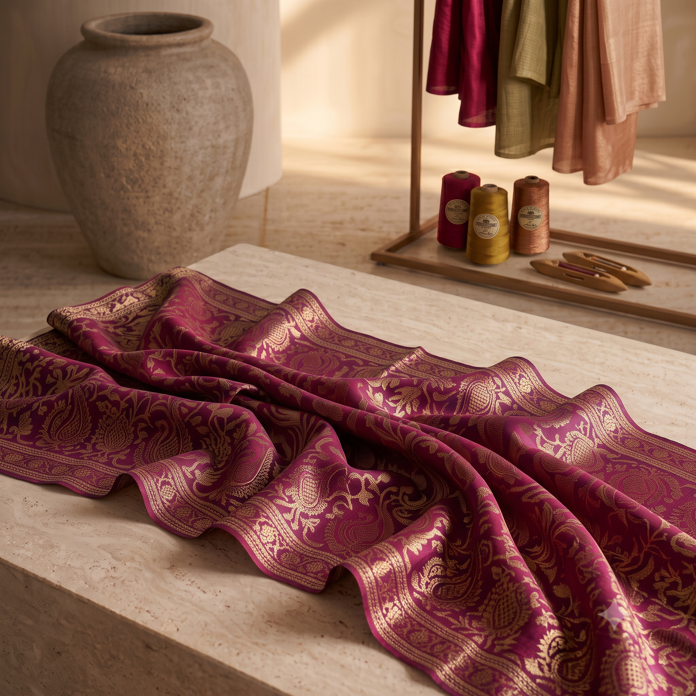
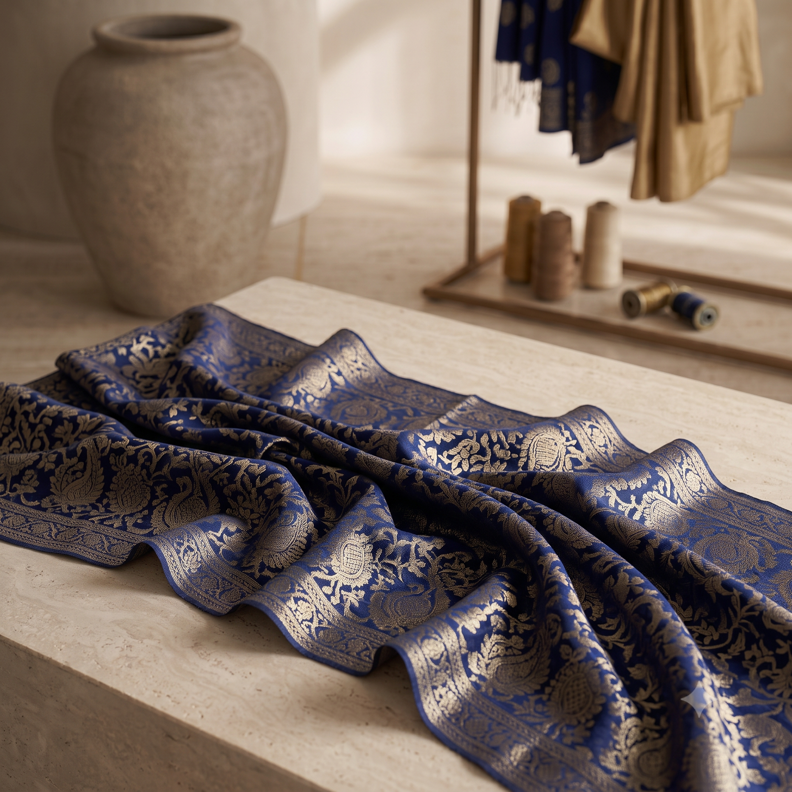
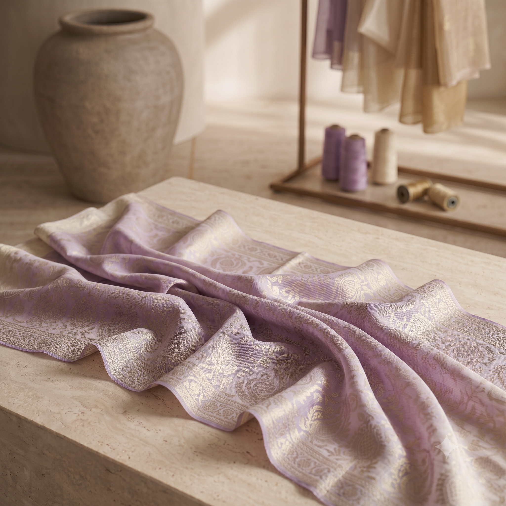
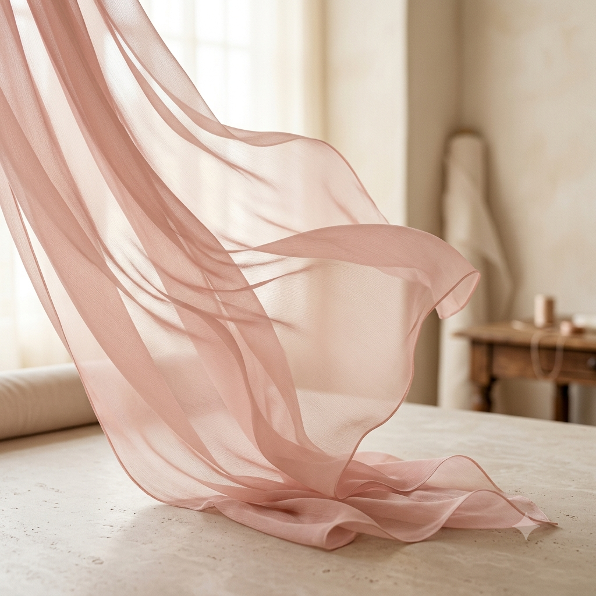
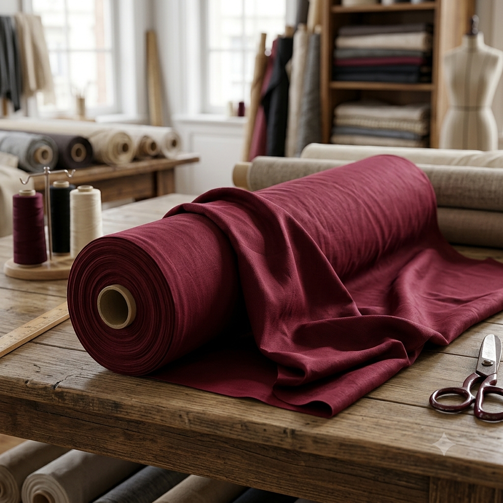
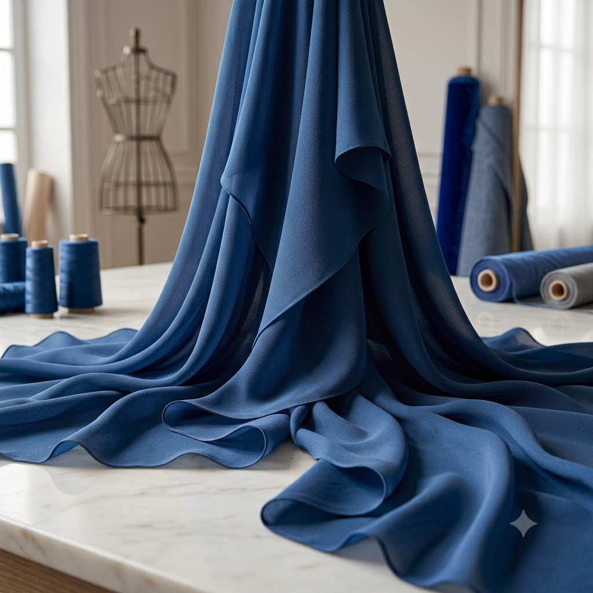
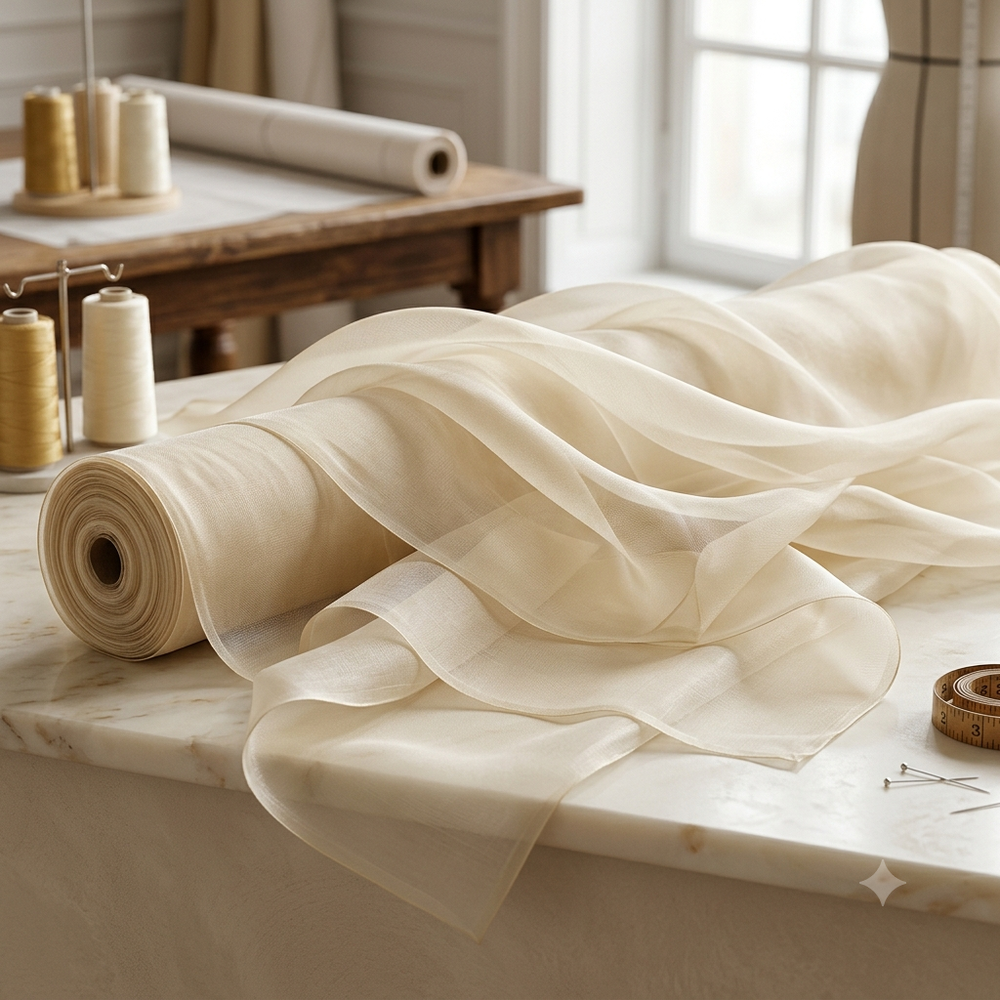
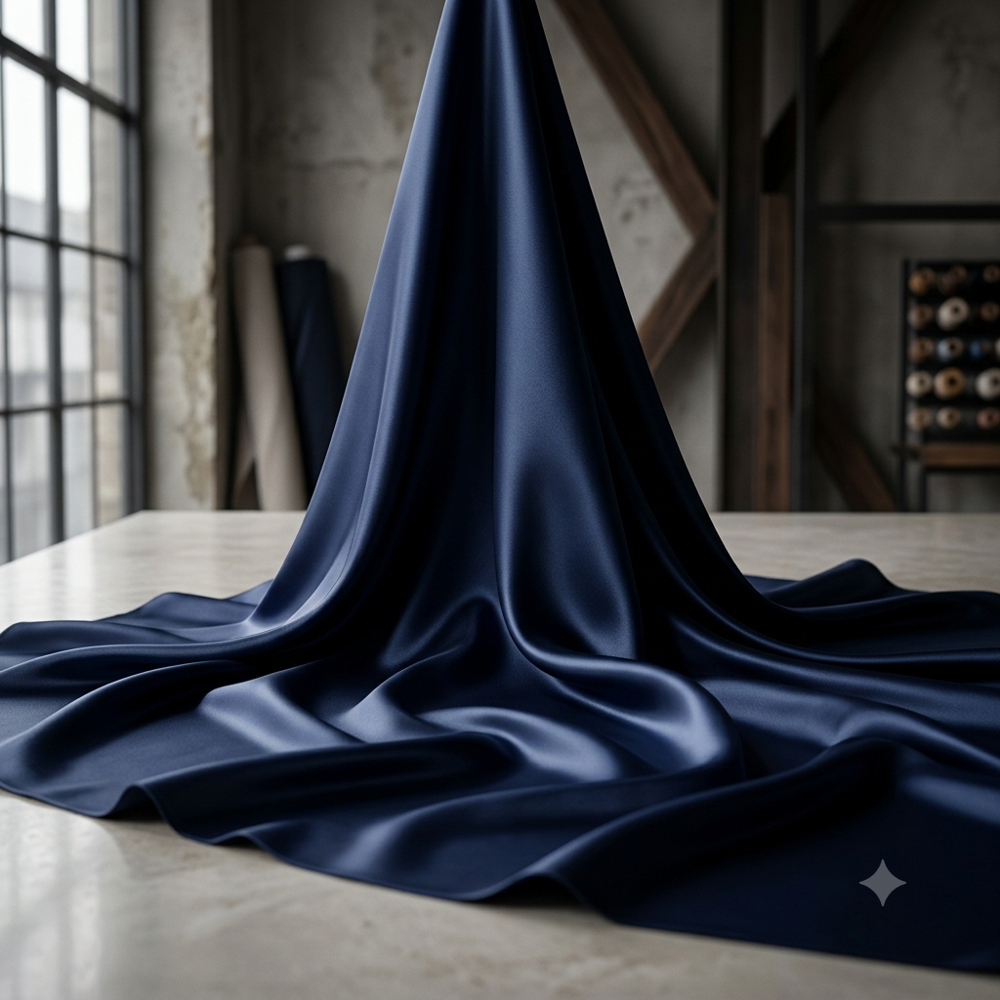
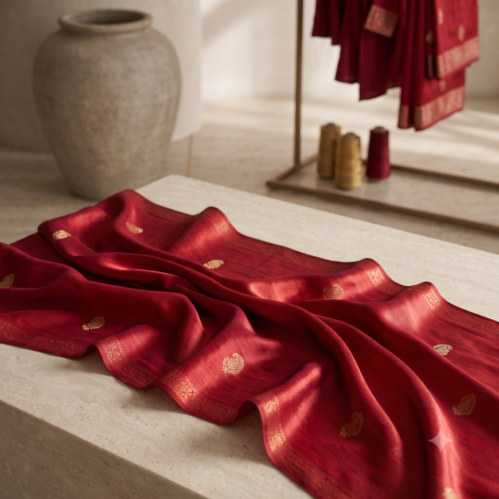
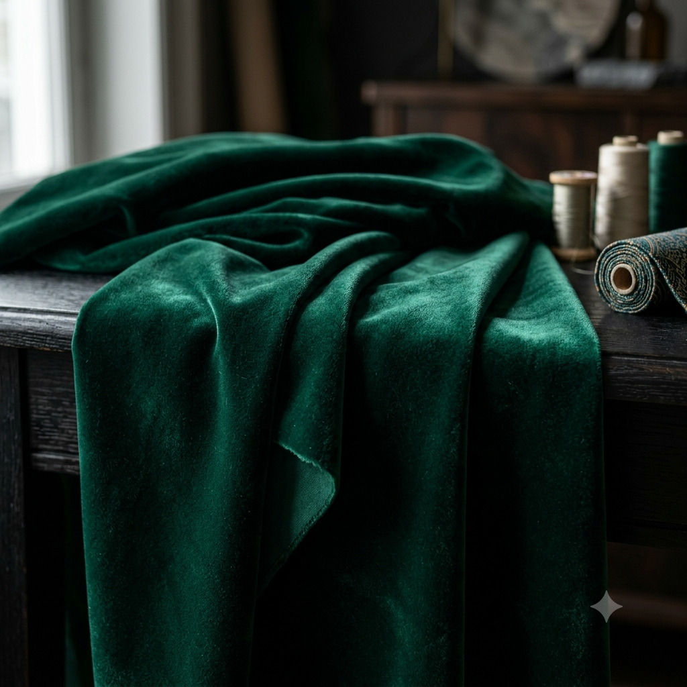

Choose the Fabric That Defines Your Style
From luxurious silks to breathable cottons, discover fabrics carefully selected for your custom creation.

Banarasi Silk
A magnificent handwoven silk known for its intricate zari work and opulent feel. Perfect for sarees, lehengas, and grand festive wear.
Select for Custom Stitching
Brocade
A richly decorative shuttle-woven fabric often made in colored silks with or without gold and silver threads. Ideal for structured jackets and blouses.
Select for Custom Stitching
Chanderi
A traditional ethnic fabric characterized by its lightweight, sheer texture and fine luxurious feel. Perfect for summer festive wear and kurtis.
Select for Custom Stitching
Chiffon
A diaphanous, beautifully draping fabric that feels incredibly light. Ideal for flowing gowns, elegant sarees, and evening dresses.
Select for Custom Stitching
Premium Cotton
The ultimate everyday comfort. Our premium long-staple cotton is soft, crisp, and perfect for shirts, everyday dresses, and casual wear.
Select for Custom Stitching
Georgette
A sheer, lightweight, dull-finished crepe fabric. It carries excellent drape, making it perfect for flared dresses, Anarkalis, and sarees.
Select for Custom Stitching
Organza
A thin, plain weave, sheer fabric traditionally made from silk. Its crispness gives incredible volume to gowns, sleeves, and statement pieces.
Select for Custom Stitching
Satin
Renowned for its brilliantly glossy surface and dull back, satin drapes flawlessly. Ideal for slip dresses, elegant evening wear, and luxurious linings.
Select for Custom Stitching
Pure Silk
The epitome of luxury. Pure silk offers a natural sheen, breathability, and unmatched elegance. Perfect for heritage sarees, gowns, and bespoke suits.
Select for Custom Stitching
Plush Velvet
A closely woven fabric with a thick short pile on one side. Velvet brings depth, richness, and warmth, ideal for winter wear, sherwanis, and blazers.
Select for Custom StitchingFind the Perfect Fabric
A quick reference guide for your custom creations.
| Fabric | Texture & Feel | Best Suited For |
|---|---|---|
| Silk (Banarasi / Pure) | Smooth, Luminous, Rich | Sarees, Bridal Lehengas, Gowns, Sherwanis |
| Premium Cotton | Soft, Breathable, Crisp | Everyday Dresses, Shirts, Casual Kurtis |
| Velvet | Rich, Plush, Heavy | Party Wear, Winter Outerwear, Blazers |
| Chiffon / Georgette | Light, Flowing, Bouncy | Flowing Gowns, Sarees, Anarkalis, Dupattas |
| Organza | Sheer, Crisp, Structured | Statement Gowns, Voluminous Sleeves, Overlays |
What Should You Create?
Discover the ideal silhouettes that complement the unique drape and fall of each textile family.
Silk & Satin
- Heritage Sarees
- Bridal Anarkalis
- Evening Gowns
- Bespoke Suits
Velvet & Brocade
- Tailored Blazers
- Royal Sherwanis
- Winter Party Dresses
- Structured Lehengas
Cotton & Linen
- Tailored Shirts
- Wide-leg Trousers
- Casual Summer Dresses
- Everyday Kurtis
Chiffon & Organza
- Flowing Sarees
- Embellished Dupattas
- Voluminous Gowns
- Ruffled Blouses
Why Choose STITCHLY?
Premium Quality
Every yard is carefully selected to meet our luxurious standards.
Tailor-Made
Cut and stitched perfectly to flatter your unique silhouette.
Expert Finishing
Precise stitching and refined detailing by master tailors.
Made to Last
Durable craftsmanship that preserves the fabric’s beauty over time.
Found Your Fabric?
Now let's turn it into something uniquely yours.
Start Custom Stitching"STITCHLY completely transformed my wardrobe. The fit is impeccable, and the attention to detail is truly unmatched. I've never felt more confident."
— Ananya S., Loyal Client
Common Questions
How long does custom stitching take?
Typically, our bespoke process takes 2-3 weeks from the initial measurement to the final fitting.
Can I provide my own fabric?
Yes! While we offer a curated selection of premium fabrics, we are happy to craft garments using materials you provide.
The STITCHLY Standard.
Precision Fit
Tailored to your exact measurements.
Premium Quality
The finest fabrics and thread.
Timely Delivery
Delivered on schedule, every time.
We're here for you.
Whether you have a question about your order, need sizing advice, or just want to chat about fabrics, our team is ready to assist.